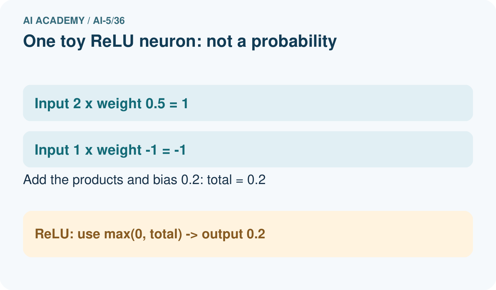
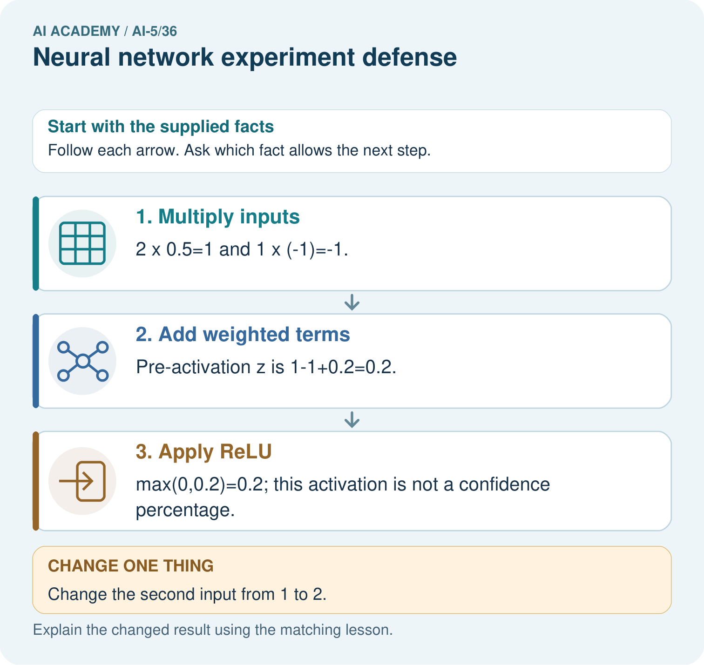

AI Academy · Level 5 · Grade 10 · Week 36 · Student lesson
Neural network experiment defense
Learn to understand, design, build, test and explain AI systems responsibly.
Project: Image-pattern Network Investigation
Before you start
Can a revised model reuse inspected final rows as new independent evidence?
Plan time to read, investigate and explain. Keep predictions separate from observations.
Student lesson · 1 of 17
Your mission
Your learning target
I can defend a network experiment using traceable evidence.
I can separate selection, final evaluation and revision claims.
I can answer a challenge with a calculation and a bounded conclusion.
Remember before reading
Close your notes first. A rough first answer helps us choose the right starting point; it is not a score for your ability.
Without opening the old lesson, explain one key idea from Capstone limitations and revision. Give an example and a mistake that the idea helps you avoid.
Without opening the old lesson, explain one key idea from Capstone hypothesis and baseline. Give an example and a mistake that the idea helps you avoid.
Without opening the old lesson, explain one key idea from Dataset shift in neural models. Give an example and a mistake that the idea helps you avoid.
After trying, check the relevant lesson or ask your teacher. Change the part of your explanation that the evidence shows was wrong.
This week you will practise:
Defend a network experiment using traceable evidence
Separate selection, final evaluation and revision claims
Answer a challenge with a calculation and a bounded conclusion
Retrieve what you already know
Can a revised model reuse inspected final rows as new independent evidence?
This week’s end goal
Explain neural network experiment defense with a traceable toy-network case and a bounded conclusion.
Student lesson · 2 of 17
Notice the evidence
A defense is not a sales pitch. Assemble the original question and criterion, data roles, baseline, model equation, settings, raw checkpoints, validation selection, frozen final predictions, limitations and revision history. Someone reading the record should be able to recompute a reported MSE and see which decisions each dataset informed.
For this capstone, two rates were compared under matched conditions. Rate 0.2 selected a = 2 with validation MSE 0 versus 0.78125 for rate 0.1. The frozen candidate then achieved final MSE 5 versus baseline 20.25 on four constructed cases. These are different comparisons and must not be collapsed into “the network was 100% accurate”.
Student lesson · 3 of 17
See how it works
| Stage | Evidence | Supported statement |
|---|---|---|
| Validation selection | Two positive rows; MSE 0 versus 0.78125 | Selected rate 0.2 by written rule |
| Frozen final comparison | Four rows; MSE 5 versus 20.25 | Lower MSE than initial-weight baseline on these rows |
| Condition check | Two negative rows; candidate MSE 10 | Nonnegative output fails to represent negative targets |
| Proposed revision | Signed output on revealed cases | A possible representational repair, not new final evidence |
Keep the evidence roles separate
Connect the picture and the explanation
Point to the input, the deciding step and the result in this week’s visual. Explain the same step in ordinary words. A picture helps when you can say what each part represents.
Student lesson · 4 of 17
Compare the cases
Compare a familiar case with a changed case
State the validation selection and frozen final comparison using their correct metrics and scopes.
Change one thing in the pictured case
Change: Change the second input from 1 to 2.
Prediction: z becomes 1-2+0.2=-0.8 and ReLU returns 0.
Reason: The negative weighted term grows; ReLU clips a negative pre-activation to zero.
Student lesson · 5 of 17
Words that unlock the idea
| Word | Meaning |
|---|---|
| Defense | An explanation of methods and claims supported by inspectable evidence |
| Evidence chain | The connection from inputs and procedure through raw outputs to a reported claim |
| Limitation | A condition restricting what evidence can establish |
| Reproduction | Repeating the documented procedure to check reported outputs |
Student lesson · 6 of 17
Follow a worked example
Challenge: “Your validation error was zero, so why did the final test fail on negative targets?” Response: validation contained only positive inputs; the output max(0,a*x) cannot be negative. The final negative cases expose a coverage and architecture limitation. The overall criterion still passed, but that does not remove the failure.
Challenge: “Is a neural network better than linear regression?” Response: the supplied baseline was a fixed initial weight, not a fitted line. The evidence establishes improvement relative to that baseline only. A fitted signed line is a relevant additional comparison and needs a documented, fair evaluation. Challenge: “Was the candidate faster?” Response: no timing evidence was collected, so speed is unmeasured.
Learn from the worked case
Cover the result before checking it. Say what is given, choose the procedure, and follow one step at a time. Then uncover the result and explain your first mismatch. Ask why a step is allowed, not only what number it produces.
A pictorial worked case: Neural network experiment defense
Defend an individual network calculation. At the defence, a team shows a single toy neuron before describing the whole image-pattern experiment.
The facts we will use
Inputs are [2,1]; weights [0.5,-1]; bias 0.2; activation is ReLU, max(0,z). This is a demonstration, not a probability model.


Read the picture one step at a time
Why this result follows
A defence should distinguish a traceable network calculation from a claim about classification quality. The neuron transforms supplied numbers; held-out labelled cases are needed to assess the complete system.
What this example does not establish
This one-neuron arithmetic does not establish how a trained image classifier generalises or why its full network makes a decision.
Read the labelled picture: Calculate both weighted terms, z and ReLU output. Predict the changed second input and explain why 0.2 cannot be called 20% accuracy.
Change one thing: Change the second input from 1 to 2. Predict the result before checking the explanation. What remains the same?
Student lesson · 7 of 17
Find and repair a mistake
Supported case: another experiment reports baseline MSE 8 and candidate MSE 2 on four untouched final rows after freezing the candidate. The reduction is 6 MSE units, or 75% of the baseline MSE. That percentage is a relative reduction in MSE, not 75% classification accuracy. It cannot establish deployment performance.
Locate the earliest unsupported step
A presenter claims the experiment proves neural networks beat fitted lines and use less energy. What evidence is missing?
Student lesson · 8 of 17
Practise together
Name eight items needed to check the capstone from question through final result.
Practise with less help: Defend the result
Use workbook W2 for the connected example “Neural network experiment defense”. First fill the input and rule boxes. Try the middle steps before asking for a hint. After a hint, try the next step yourself.
| Plan | Do | Check |
|---|---|---|
| What is given? Which rule or procedure applies? | Record each intermediate step. | Does the result follow? What remains unknown? |
Explain your trace to a partner. Your partner points to one step to check. Swap roles on the next case. Each person writes their own explanation.
Check your reasoning
Use the worked case for Neural network experiment defense. Proposed explanation: “A polished demonstration is an evaluation”. Decide whether this explanation is supported. Point to the step or supplied fact that decides; explain your repair if needed.
Answer on your own before discussion. If you are unsure, say which step you need help with.
Explain the picture
Calculate both weighted terms, z and ReLU output. Predict the changed second input and explain why 0.2 cannot be called 20% accuracy.
This is supported practice. Keep the separately named independent case for an attempt before feedback.
Student lesson · 9 of 17
Run the investigation
Predict, investigate and preserve the evidence
State the validation selection and frozen final comparison using their correct metrics and scopes.
| Record | Your evidence |
|---|---|
| Given input and fixed rule | |
| Prediction before checking | |
| Actual result, or “not run” | |
| First mismatch and one explanation | |
| Boundary or missing input and expected response |
On paper, trace the supplied procedure. If code is provided, predict before running it in a local practice file. Never write an expected answer as though it were an observed run.
Plan → try → check
Before trying: what do I expect, and why? While trying: which step could first go wrong? Afterwards: what did I actually observe, and what should change? Keep “not run” if you only traced the procedure.
Student lesson · 10 of 17
Build your understanding
Explain → apply → challenge
Name eight items needed to check the capstone from question through final result.
A presenter claims the experiment proves neural networks beat fitted lines and use less energy. What evidence is missing?
Propose a fair next comparison with a fitted signed line. State how to preserve previous evidence and reserve new evaluation.
Student lesson · 11 of 17
Connect your project
For Image-pattern Network Investigation, use this week’s independent task as a rehearsal for the final evidence pack: A separate experiment compares candidates C1 and C2 on two validation rows: MSE 1.5 and 1.0. The written rule selects lower MSE. After freezing C2, four fresh final rows give baseline squared errors 4,9,1,2 and C2 squared errors 1,1,2,0. Compute final MSE and relative reduction. Two condition-B rows are the last two rows; compare baseline and candidate MSE there. State what this record supports and what is unmeasured. Keep actual observations separate from expected results, preserve failures, compare a baseline and explain the limits.
| Project evidence | Record |
|---|---|
| Component and version | |
| Inputs permitted at prediction time | |
| Trace and comparison with earlier work | |
| Failure, limit and human review |
Evidence for your project
For the Image-pattern Network Investigation, save the labelled trace and the changed-case explanation beside the experiment record. State exactly what this example supports before linking it to the wider capstone claim.
Student lesson · 12 of 17
Show what you know
Use a short presentation: question; method and controls; selection; final result; failures; revision; next question. State the small constructed sample, absent real-world coverage, limited baseline and unmeasured resource use. A useful next question is whether a signed-output procedure improves on a fitted-line baseline under newly reserved evaluation conditions. Passing this capstone means explaining the evidence correctly, including an unsuccessful or limited result.
Propose a fair next comparison with a fitted signed line. State how to preserve previous evidence and reserve new evaluation.
Student lesson · 13 of 17
Study a complete case
Complete evidence record
Keep the evidence roles separate
Follow the input through the stated procedure to its result. Cover the result first, predict it, then explain every intermediate step. The text/table accompanies the figure so the example can be read without colour.
Student lesson · 14 of 17
Try a new case independently
Independent case: Defend a new record independently
A separate experiment compares candidates C1 and C2 on two validation rows: MSE 1.5 and 1.0. The written rule selects lower MSE. After freezing C2, four fresh final rows give baseline squared errors 4,9,1,2 and C2 squared errors 1,1,2,0. Compute final MSE and relative reduction. Two condition-B rows are the last two rows; compare baseline and candidate MSE there. State what this record supports and what is unmeasured.
Attempt this case before feedback. Record any help. Earlier examples below are further practice; a case already practised with feedback cannot establish fresh transfer.
Attempt this without hints
A separate experiment compares candidates C1 and C2 on two validation rows: MSE 1.5 and 1.0. The written rule selects lower MSE. After freezing C2, four fresh final rows give baseline squared errors 4,9,1,2 and C2 squared errors 1,1,2,0. Compute final MSE and relative reduction. Two condition-B rows are the last two rows; compare baseline and candidate MSE there. State what this record supports and what is unmeasured.
Record support used: none, hint or teacher explanation. After feedback, a different case is needed to demonstrate independence.
Use feedback to improve
Attempt the independent case before hints. Record whether you worked alone, used a hint or followed a model. After feedback, fix the first unsupported step and explain why it changed. A later check uses a changed case, not a copied answer.
Student lesson · 15 of 17
Your lesson route
Start with this question: Defend an individual network calculation. At the defence, a team shows a single toy neuron before describing the whole image-pattern experiment.
| By the end, I can | How I will show it |
|---|---|
| Defend a network experiment using traceable evidence | Explain the deciding step, show a trace or test, and state one limit. |
| Separate selection, final evaluation and revision claims | Explain the deciding step, show a trace or test, and state one limit. |
| Answer a challenge with a calculation and a bounded conclusion | Explain the deciding step, show a trace or test, and state one limit. |
Remember → watch and explain → try with help → investigate → try independently → keep project evidence. Your teacher may spread this lesson across several classes.
Keep your first prediction. Compare it with what the evidence shows and explain any change.
Student lesson · 16 of 17
Finish and return
Close your notes. Explain this goal in your own words: Defend a network experiment using traceable evidence
If you are unsure, return to the worked picture and explain one arrow. If you are ready, change an input or assumption and justify your prediction.
Save your workbook evidence. At the next review, try a different case before opening your old answer.
Student lesson · 17 of 17
Supported practice, repair and portfolio
Use this supported practice once, in the browser or on paper. Keep the reserved independent assessment for a separate first attempt before teacher feedback.
Defend an individual network calculation. At the defence, a team shows a single toy neuron before describing the whole image-pattern experiment.
Practice 1: explain the deciding evidence
Which labelled step matches this detail? max(0,0.2)=0.2; this activation is not a confidence percentage.
1. Add weighted terms
2. Apply ReLU
3. Multiply inputs
Hint if needed: Read the steps in the pictorial case. Match the supplied detail to the stage that performs or records it.
After your attempt, compare with the supported explanation: Apply ReLU max(0,0.2)=0.2; this activation is not a confidence percentage. A defence should distinguish a traceable network calculation from a claim about classification quality. The neuron transforms supplied numbers; held-out labelled cases are needed to assess the complete system.
Practice 2: explain the deciding evidence
Changed-case practice: Change the second input from 1 to 2. Which conclusion is supported by the supplied facts?
1. We can decide the result without examining the changed input or the procedure.
2. This one example guarantees correct results for every future input.
3. z becomes 1-2+0.2=-0.8 and ReLU returns 0.
Hint if needed: Use the changed condition and the deciding step in the pictorial trace. The answer must say what follows from those facts.
After your attempt, compare with the supported explanation: z becomes 1-2+0.2=-0.8 and ReLU returns 0. The negative weighted term grows; ReLU clips a negative pre-activation to zero.
Repair a missing building block
Review Capstone limitations and revision (ai-5/35). Goal: Evaluate a frozen candidate and baseline on final rows. Short practice: Calculate the slice rates and explain the claim revision. If the team trains on the shifted evaluation patterns, what kind of evidence does their rerun provide?. Return to this week and explain what you changed.
Review Capstone hypothesis and baseline (ai-5/33). Goal: Write a testable capstone hypothesis and a credible baseline. Short practice: Name the intended change, the baseline and the measured outcome. Why must both versions avoid training on the eight reserved labels?. Return to this week and explain what you changed.
Review Dataset shift in neural models (ai-5/30). Goal: Explain how a changed input mix can change overall accuracy. Short practice: Did the supplied model’s dim-light accuracy deteriorate? Point to the relevant step in the picture, then write the changed result and the rule or evidence that supports it.. Return to this week and explain what you changed.
Keep your completed work
Use Download completed work in the hosted lesson to export your answers, reflections, practice feedback and code-run evidence. Open the HTML copy to read or print it. Drafts stay in this browser when storage is available; clear drafts on a shared device.